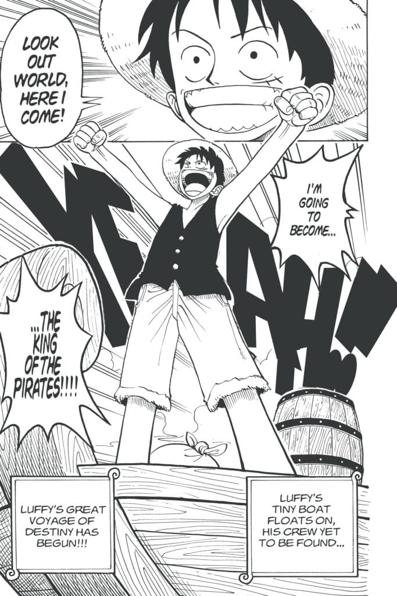
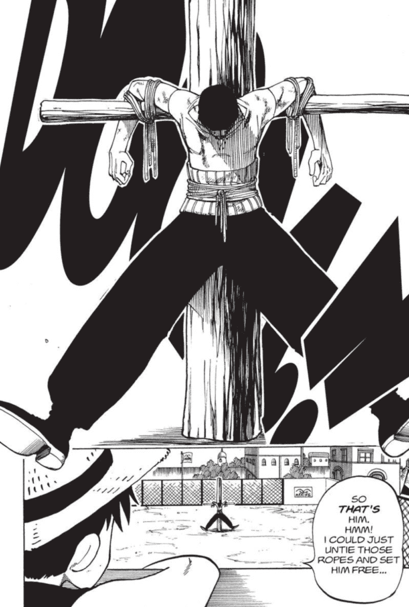
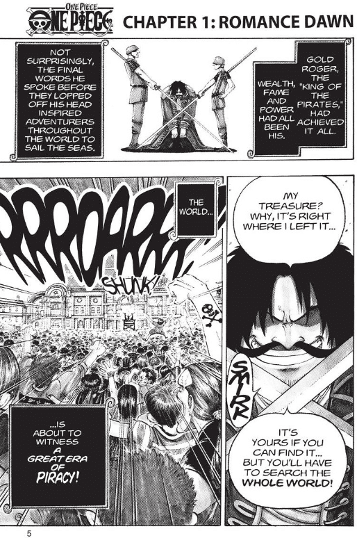

01
ROMANCE DAWN
จุดเริ่มต้น
ของการเดินทาง
เด็กชายคนหนึ่งออกเดินทางพร้อมความฝันที่ชัดเจนว่า วันหนึ่งเขาจะเป็นราชาโจรสลัด

จุดเริ่มต้นของการผจญภัย
VOLUME 01 · ROMANCE DAWN
ก่อนจะมีเรือใหญ่ ลูกเรือ และการเดินทางสู่แกรนด์ไลน์ ทุกอย่างเริ่มจากเด็กชายหมวกฟางคนหนึ่ง กับความฝันที่ดูเป็นไปไม่ได้ แต่เขากลับเชื่อมั่นในมันเต็มร้อย
01 — เรื่องย่อ
เล่มแรกจะพาเราไปรู้จักกับ มังกี้ ดี. ลูฟี่ เด็กหนุ่มที่ฝันอยากเป็นราชาโจรสลัดและออกตามหา One Piece เขาได้พบกับโคบี้และโรโรโนอา โซโล ก่อนที่การเดินทางของเขาจะเริ่มกลายเป็นเรื่องของ “พวกพ้อง” มากกว่าการตามหาสมบัติเพียงอย่างเดียวในแกรนด์ไลน์
เล่มแรกพาเราไปรู้จักโลกของลูฟี่ทีละน้อย และค่อย ๆ เปิดพื้นที่ให้กับความฝันของตัวละครแต่ละคน
02 — MANGA READER
ROMANCE DAWN
เด็กชายคนหนึ่งออกเดินทางพร้อมความฝันที่ชัดเจนว่า วันหนึ่งเขาจะเป็นราชาโจรสลัด

ความฝัน
สิ่งที่ทำให้ลูฟี่น่าสนใจคือ เขาไม่ได้เริ่มต้นจากการเป็นคนที่เก่งที่สุด แต่เริ่มจากการรู้ว่าตัวเองต้องการอะไร และเชื่อมั่นว่าจะไปถึงจุดนั้น
ความฝันจึงกลายเป็นแรงผลักให้เรื่องราวเริ่มต้นขึ้น
พวกพ้อง
การพบโซโลทำให้การเดินทางของลูฟี่เริ่มเปลี่ยนไป จากความฝันของคนคนเดียว กลายเป็นการเดินทางที่มีคนอื่นเข้ามาเกี่ยวข้อง
แต่ละคนมีเป้าหมายของตัวเอง และนั่นทำให้เรื่องน่าติดตามมากขึ้น


THE JOURNEY CONTINUES
เล่มแรกทำหน้าที่เหมือนประตูบานแรกของโลก ONE PIECE ยิ่งอ่านต่อ ก็ยิ่งมีตัวละคร ความฝัน และเรื่องราวใหม่ ๆ ให้ค้นพบ
ไปต่อที่เล่ม 0203 — CONTENTS
04 — CHARACTERS
แนะนำตัวละครเบื้องต้น
05 — WHY READ?
สิ่งที่ทำให้เล่มแรกน่าสนใจไม่ใช่แค่การผจญภัย แต่คือการได้เห็นว่าเด็กธรรมดาคนหนึ่ง สามารถเลือกเชื่อในความฝันของตัวเองได้มากแค่ไหน และการเดินทางจะเปลี่ยนไปอย่างไรเมื่อเราได้พบกับ “พวกพ้อง” ที่พร้อมจะเชื่่อใจไปตลอดการเดินทาง
ลูฟี่ทำให้ความฝันที่ดูเป็นไปไม่ได้กลายเป็นแรงผลักให้เราอยากลองเดินตามเป้าหมายของตัวเอง
เรื่องนี้ชวนมองว่าความสัมพันธ์ที่ดีไม่ได้เกิดจากความเหมือนกัน แต่เกิดจากการเคารพความฝันของกันและกัน
จังหวะตลกสลับกับฉากต่อสู้และการผจญภัย ทำให้เล่มแรกอ่านง่ายและอยากรู้ว่าจะเกิดอะไรขึ้นต่อ
ตัวละครและโลกถูกเปิดทีละน้อย ทำให้ตอนจบไม่ได้ปิดทุกอย่าง แต่ทิ้งความรู้สึกว่า “ยังมีอะไรอีกเยอะ”
06 — MY TAKE
สำหรับคนที่ยังไม่เคยอ่าน ONE PIECE เล่มนี้ทำหน้าที่เหมือนประตูบานแรกได้ดีมาก เพราะเราไม่จำเป็นต้องรู้โลกทั้งหมดก่อน แค่เรารู้ว่ามีเด็กคนหนึ่งออกเดินทางตามความฝัน และเราก็จะค่อย ๆ ค้นพบโลกไปพร้อมกับเขาแล้ว